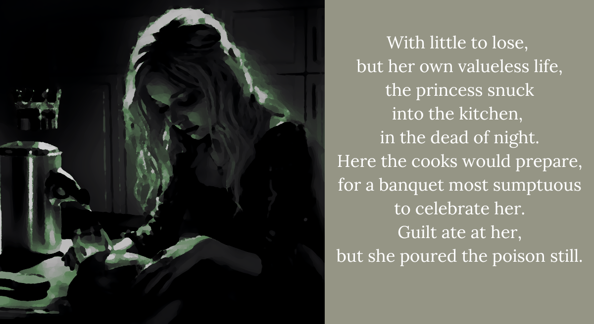

The princess tries poison
It is little wonder,
that with such hasty prep,
her plans would go awry.
For a young and lazy page sneaking away from training,
poured himself a cool drink and drank his last.
And what the cooks saw,
the maids made sure to tell.
And what the maids told,
grew more fascinating by the day.
By the end, it was not mere poison but black magic!
Not that it would have made much difference,
for anyone who drank that water.
Indeed, all that mattered was the type of stain it left,
for bloodthirsty usurpation was normal decorum,
but black magic was disgusting and repulsive.
The court was in a frenzy.
“Who would sabotage this blessed union?!”
Foreign spies? Fearful nobility? Jealous family?
Then the queen herself stood up and said, with fitful tears,
“I saw my daughter enter the kitchen that night.
I failed as a mother.
I am so sorry my kingdom, my daughter, my darling.”
And the princess’s heart ached like never before,
because her mother was the one person she never
ever wanted to hurt.
That was how she knew she deserved her fate,
and found her proper standing in this court on the scaffold.
“Well, that sucked. If it were me, I would’ve succeeded,” Shiori pouts. “I’m good at sneaking into the kitchen. Though, hmm~, I suppose I’m usually stealing things rather than poisoning things.”
“We probably deserved that one.” I sigh, noticing the locked door doesn’t budge. “Guess we gotta try again? I want to… I want to go back to the queen question. The choice about what she was like.”
ENDING 5 REACHED: It was just a prank, mom!
It seems you’ve reached a dead end. But fret not! Our two lovely main characters are still alive.
RETURN